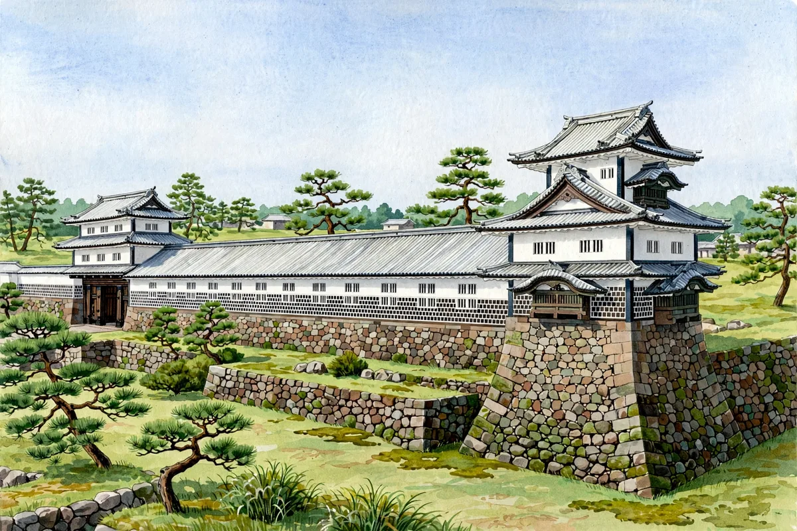

崩れた石垣343個を元通りに――金沢城・石川門前土橋、能登半島地震の被災28カ所で復旧第1号に

城と神社にまつわる新しい動きをお伝えするニュース記事です。出典は北國新聞（2026年11月11日）です。能登半島地震で崩落した金沢城の石川門前土橋石垣で、石川県は10日、石材の積み直し作業を終え、周囲を覆っていたシートを取り外しました。園内で被災した石垣は28カ所。城の「顔」とも呼ばれる石川門前土橋石垣が、復旧完了の第1号となりました。
同所では石材343個が、幅約13メートル、高さ約3メートル、奥行き約5メートルにわたって崩れました。復旧に当たっては、一つ一つの石の場所を特定した上で回収し、橋の上からクレーンで元通りに積み上げました。石垣の背面には「栗石（ぐりいし）」と呼ばれる小さな石を詰め込む伝統工法を用いて、強度を高めています。
工事は石垣の上部や植栽を整えた上で、13日にも完了する見通しだと報じられています。このほか、崩落があった本丸南石垣、顕著な変形が確認された玉泉院丸南西石垣も、年内に積み直す予定です。県は早ければ2038年度末ごろまでに、全28カ所の復旧完了を目指しています。
長期のプロジェクトへの理解を深めてもらうため、県は金沢城公園のホームページで復旧工事の進捗を紹介しているほか、14日と15日に現地で見学ツアーを計画していると報じられています。参加申込は定員の120人に達し、栗石に自由にメッセージを書いてもらう「今しかできない経験」が特典として用意されました。
検定の学習ポイントは、金沢城の石垣と復旧の進め方です。金沢城は前田氏の加賀藩の藩庁で、石垣の博物館と呼ばれるほど多様な石垣が残る城として知られます。石垣の背面に栗石を詰めるのは、石垣を支える伝統的な工法のひとつで、崩れた石を一つ一つ元の場所に戻す作業は、文化財の石垣を守る上で欠かせない手順です。関連記事「石垣を支える職人と構造｜穴太衆と間詰石の話」もあわせてどうぞ。
金沢城公園を訪れる際は、公式案内で最新の公開範囲を確認してください。このサイトのイベント予定表では、12月19日・20日に横浜で開かれる日本最大級のお城ファンの祭典「お城EXPO 2026」も案内しています。
天守つるぎから一言：343個の石を、一つ一つ元の場所へ。崩れた石垣が「顔」を取り戻すまで、まだ28分の1だけど、確かな一歩だね。
城と神社のニュースや検定の情報は、公式SNSでもお知らせしています。InstagramとThreadsの @tabi.kentei をフォローして、最新情報をチェックしてください。
この記事のおすすめ本

表紙イメージ（実際の表紙とは異なります）
PR 入門書
ゼロから分かる！ 図解日本の城入門
著者：小和田泰経
縄張・堀と石垣・天守のしくみまで、イラストでやさしく解説。城めぐり初心者が最初に持つ一冊として、検定の教科書と合わせて読むのにおすすめです。
Amazonで見る価格はAmazonでご確認ください／リンク先：Amazon.co.jp

表紙イメージ（実際の表紙とは異なります）
PR ガイド・スタンプ帳
日本100名城に行こう 公式スタンプ帳つき
著者：公益財団法人 日本城郭協会
日本100名城の公式ガイドブック。1城1ページで見どころを解説し、巻末がそのまま公式スタンプ帳になります。スタンプラリーを始めるならまずこの一冊。
Amazonで見る価格はAmazonでご確認ください／リンク先：Amazon.co.jp

表紙イメージ（実際の表紙とは異なります）
PR ガイド・スタンプ帳
日本100名城と続日本100名城に行こう 公式スタンプ帳つき
著者：公益財団法人 日本城郭協会
100名城と続100名城、あわせて200城を一冊に収録した合本版。すでに100名城を巡り始めた人が、続編までまとめて持ち歩きたいときに便利です。
Amazonで見る価格はAmazonでご確認ください／リンク先：Amazon.co.jp
当サイトは、Amazon.co.jpを宣伝しリンクすることによってサイトが紹介料を獲得できる手段を提供することを目的に設定されたアフィリエイトプログラムである、Amazonアソシエイト・プログラムの参加者です。価格・在庫はリンク先でご確認ください。